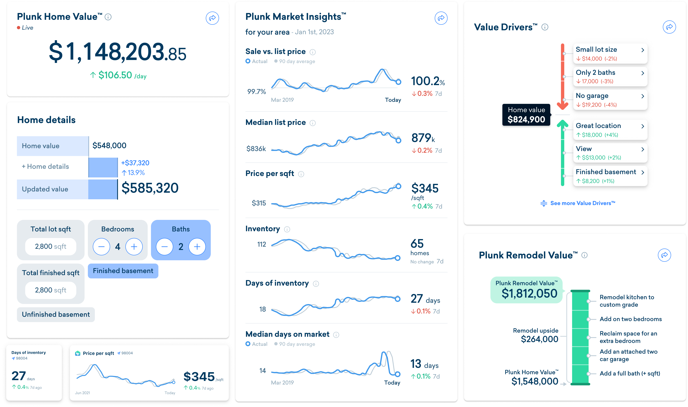
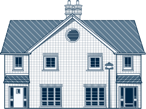

Plunk®
About
Plunk is a suite of tools and products that help
homeowners understand their home as a financial asset.
Plunk Pro is live Deliverables
Product design
Website design
Design system
Motion system
Copywriting
2020 – 2023


Plunk Pro™
responsive website, dashboard, user experience
Plunk Pro™ was created to become a home for Plunk's past, present
and future offerings.
It's goal was to allow audiences to understand unique product
offerings, create a free account, and explore what Plunk had to
offer.

Plunk Pro™ Mobile
Mobile application (iOS + Android)
Plunk Pro™ mobile is a companion app for Plunk Pro.
It allowed audiences to view key information on the go, receive
updates and notifications about saved homes, as well as view at a
glance data through the use of homescreen widgets.
